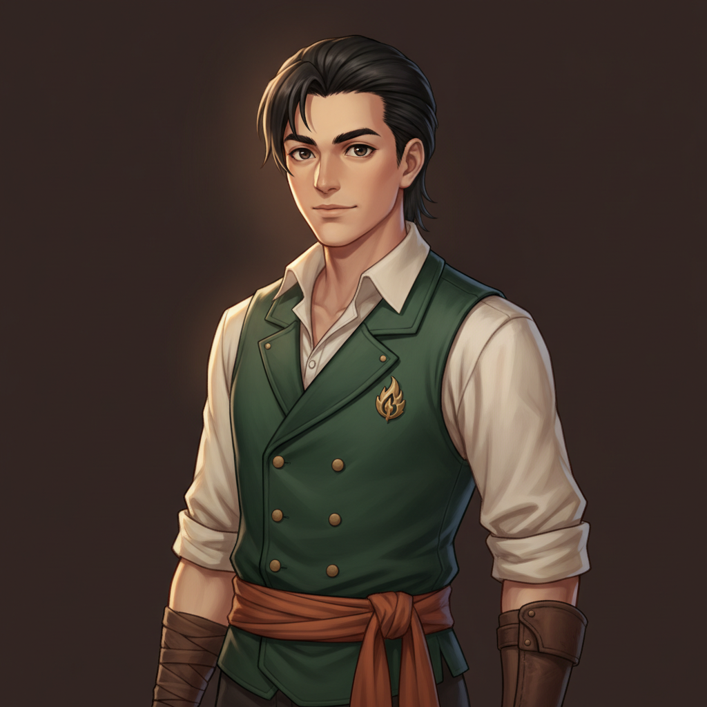
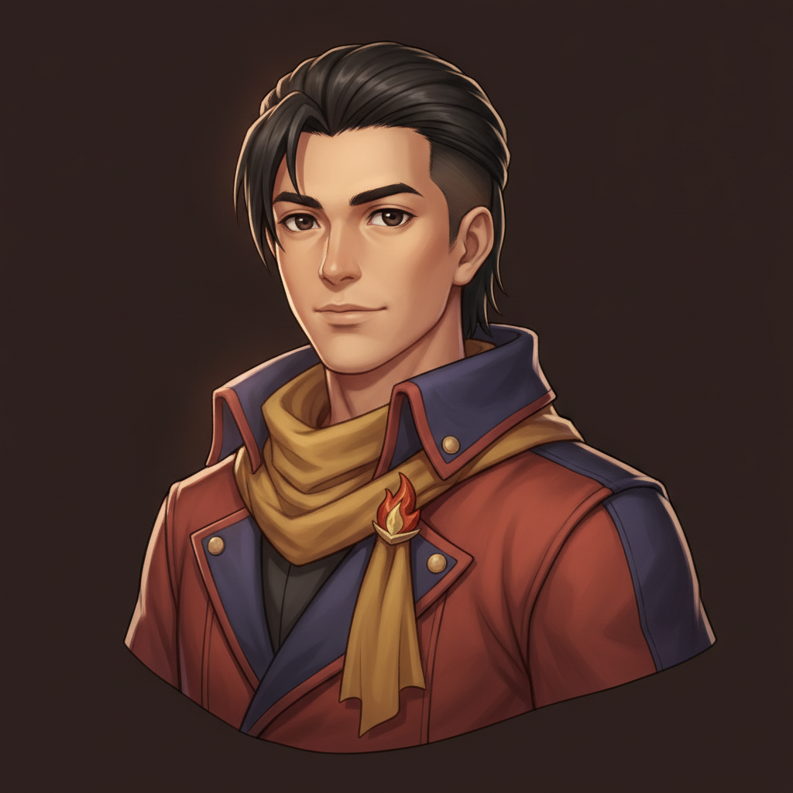
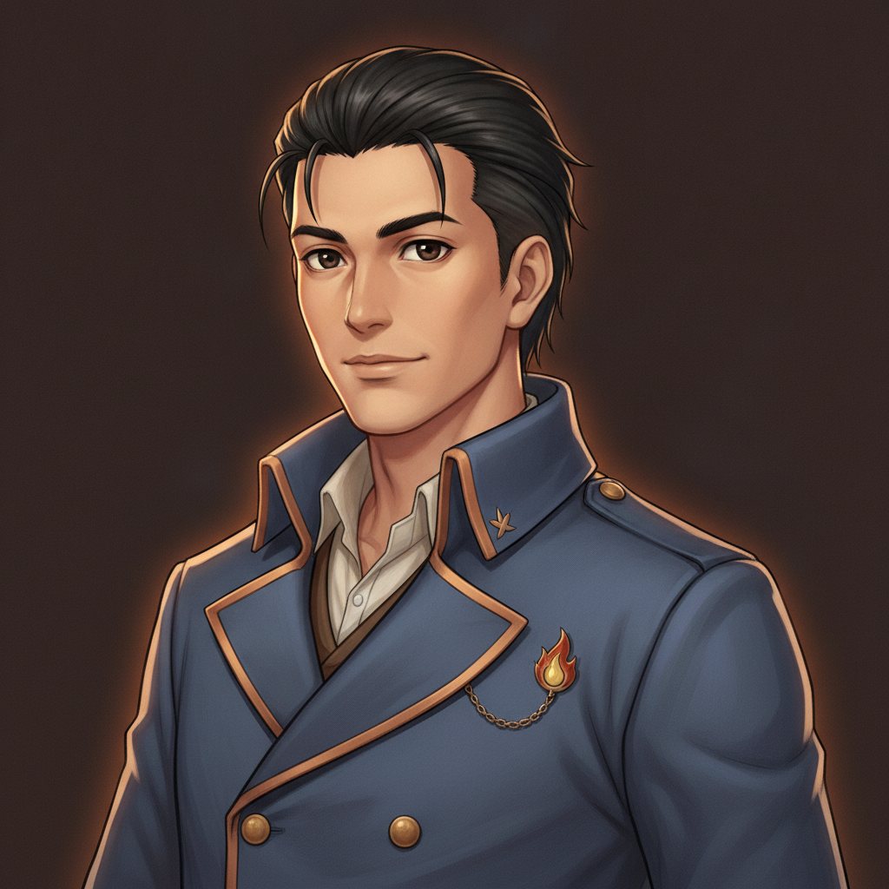
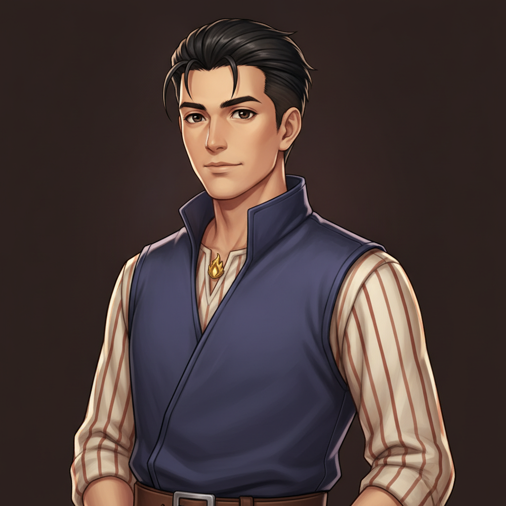
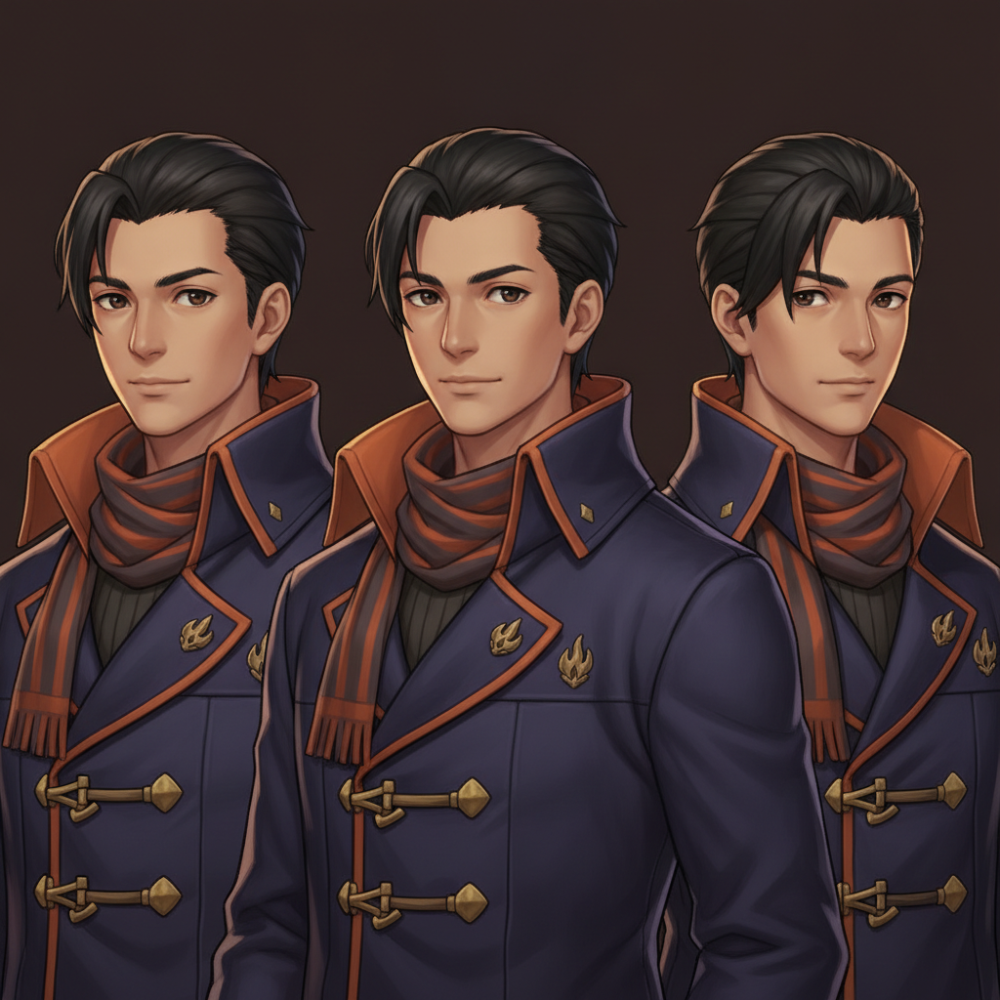

H2 · the shoulder-cape

dark-teal asymmetric half-cape clasped by the flame pin, cream band-collar shirt, leather strap with a slim brass wick-case.
H3 · waistcoat & ember sash

deep-green double-brass waistcoat, rust-orange sash, one leather bracer — classic JRPG villager-hero.
H4 · the journeyman

rust-red coat with indigo collar, mustard scarf held by a flame clasp — the richest color story of the set.
H5 · the dusk uniform

slate-blue double-breasted coat with copper piping, flame pin on a short chain.
H6 · the over-vest

high-collar indigo over-vest atop a cream-and-rust striped shirt, flame stud at the throat.
H1 · ember-lined coat (format break — 3 copies)

came back as a triple character sheet — but the outfit itself (indigo coat, ember-orange collar lining, striped scarf, brass toggles, flame badge) may be the best design of the round; one reroll fixes the framing.